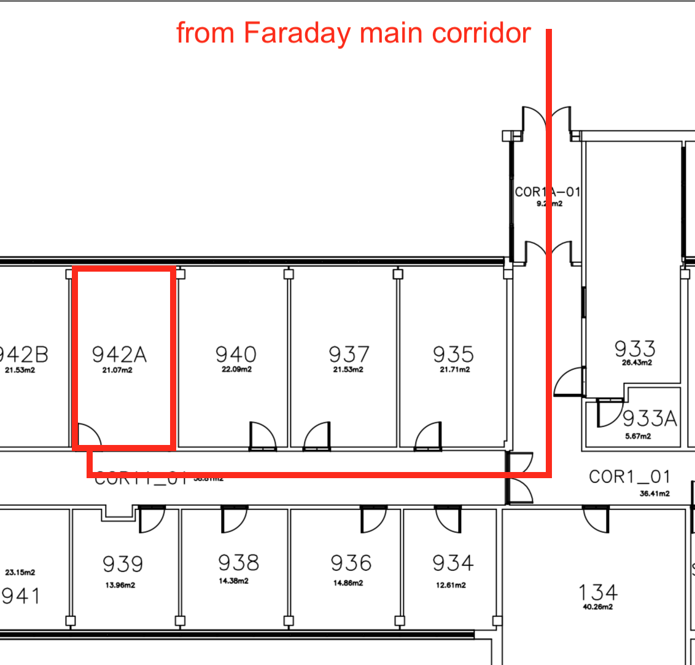

SA2C/Supercomputing Wales HPC Clinic
Talbot 942a location
Directions
Enter Faraday through the main entrance, and head straight until you enter Talbot. Then turn right, and room 942A is on the right side of the corridor.
Map

(Click to expand the map)
Video
Back to the schedule